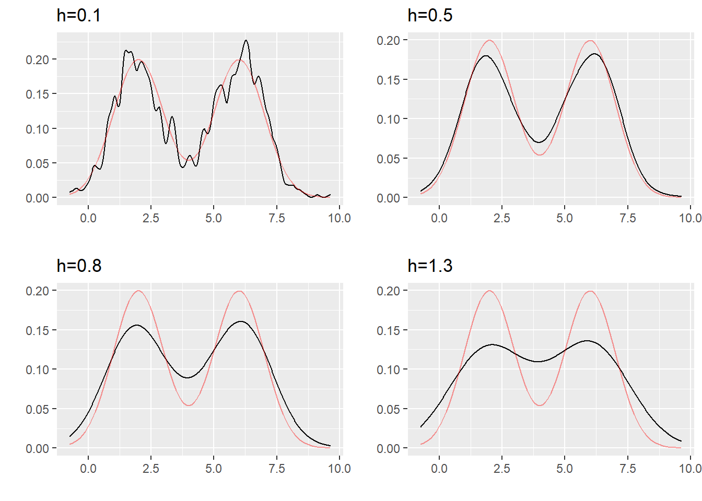
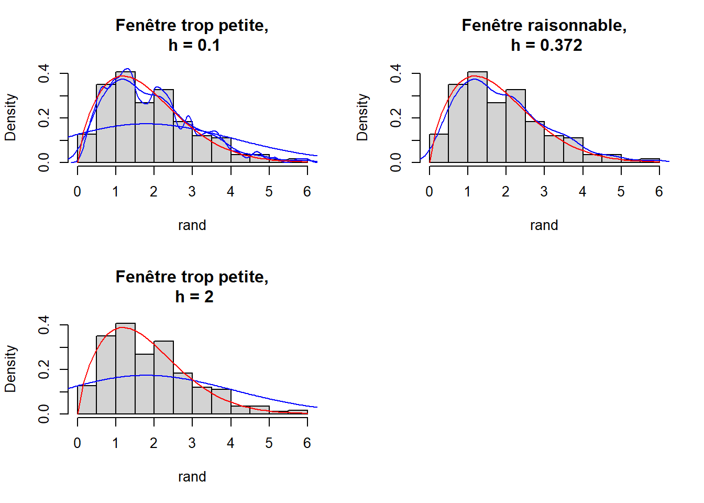

Chapter 3 Estimateur de densité à noyau
3.1 Evaluer un estimateur
Avant de commencer cette partie on va d’abord introduire quelques notions et définitions
Pour évaluer un estimateur \(\hat{f}\) on définit son risque associé.
3.1.1 Risque quadratique des estimateurs à noyau sur les classe des espaces de Hölder
Nous nous intéressons au risque quadratique de \(\hat{f}_n\), définit par :
étant donné \(x_0 \in \mathbb{R}\)
\[
R(\hat {f}_n, f) = \mathbb{E}[|\hat {f}_n(x_0) - f(x_0)|^2]
\]
Rappelons la décomposition “biais-variance” du risque quadratique : \[ \mathbb{E}[|\hat {f}_n(x_0) - f(x_0)|^2] = (\mathbb{E}[\hat {f}_n(x_0)] - f(x_0))^2 + \mathbb{V}[\hat {f}_n(x_0)] \]
3.1.1.1 Majoration du biais et de la variance
Dans cette section, nous allons nous intéresser au compromis biais-variance afin de minimiser le risque quadratique. Nous introduirons après quelques définitions deux propositions qui montrent que sous certaines hypothèses, on peut majorer le biais ainsi que la variance.
\begin{exem} (Simulation numérique)
Nous estimons la fonction densité d’une somme de deux variables gaussiennes ci-contre avec la méthode à noyau avec différentes fenêtres.
\[
f(x)=\frac{1}{2}\frac{1}{\sqrt{2\pi}}(exp(-\frac{(x-2)^2}{2})+exp(-\frac{(x-6)^2}{2}))
\]
On va en fait utiliser ggplot pour représenter l’estimateur à noyau. La fonction qui permet de dessiner l’estimateur à noyau est geom_density. Le paramètre représentant le fenêtre h rappelle bw (comme bandwidth en Anglais).
\end{exem}

3.2 Méthodes adaptatives
On introduit précédemment la notion de l’estimation de la densité qui dépend d’un paramètre de lissage \(h\). Soit \((\hat{f_h})_{h\in \mathcal H}\) une famille des estimateurs de la fonction densité \(f\) que que l’on cherchons cherche à estimer. Une question s’impose : comment peut-on construire un estimateur à risque optimal à partir de cette famille en tenant en considération les observations ? Dans la théorie adaptative f est toujours supposée appartenir à une classe fonctionnelle. Cette classe n’est pas connu à priori mais supposé appartenir à une famille de classes fonctionnelles{\(\mathcal{F_{\alpha}},\alpha \in\mathcal{A}\)} où \(\mathcal{A}\) est un ensemble des paramètres de nuisance. ( ref : Sur l’estimation adaptative d’une densité multivariée sous l’hypothèse de la structure d’indépendance-Approche minimax adaptative).
Dans cette partie, afin de répondre à la question posée auparavant, nous allons discuter du choix du noyau en premier lieu. Ensuite, nous introduirons deux méthodes pour le choix du paramètre de lissage \(h\).
3.2.1 Choix du noyau
Avant de présenter le critère de choix du noyau nous allons introduire quelques outils mathématiques qui simplifient l’écriture du critère.
Tout d’abord, nous avons besoin du risque quadratique \(\mathcal R\) aussi appelé l’erreur quadratique moyenne (Mean Squared Error en anglais). Dans cette partie nous allons noter \(MSE\) le risque quadratique pour des questions pratiques.
\[ \begin{aligned} MSE &= \mathcal R = \mathbb E \left[ \{ \hat f_n(x)-f(x) \} \right] \\ &=\mathbb V \left[ \hat f_n(x) \right] + Biais^2 \left[ \hat f_n(x) \right] \\ &= MSE(x ; n, h, K, f). \end{aligned} \] comme nous l’avons montré précédemment. @ref{#holder}
L’approximation de l’erreur quadratique (Average of Mean Squared Error en anglais) est donnée par l’équation suivante :
\[
AMSE(x)= \frac1{nh} f(x) \int_{\mathbb R}K(t)^2 dt + \left(\frac12h^2f''(x)\int_{\mathbb R} t^2K(t) dt \right)^2.
\]
Elle a été calculée à partir de la variance approchée et du biais approché.
L’erreur quadratique moyenne intégrée (Mean Intregrated Squared Error en anglais) est une mesure théorique communément utilisée pour évaluer la différence entre \(f\) et \(\hat f_n\). Pour l’évaluer on utilise l’erreur quadratique moyenne qu’on intègre sur le support \(\mathbb R\) de l’estimateur. \[ \begin{aligned} MISE(n,h,K,f) &= \int_{\mathbb R}MSE(x;n,h,K,f)dx\\ &= \int_{\mathbb R} \mathbb V\left[ \hat f_n(x) \right] dx+ \int_{\mathbb R} Biais^2 \left[ \hat f_n(x) \right]dx \end{aligned} \]
De la même façon que nous l’avons fait avec l’erreur quadratique moyenne, nous allons calculer l’expression approchée de l’erreur quadratique moyenne (Average of Mean Integrated Squared Error en anglais).
\[ \begin{aligned} AMISE(x)&= \frac1{nh} \int_{\mathbb R}f(x)dx \int_{\mathbb R}K(t)^2 dt + \frac14h^4 \int_{\mathbb R}f''(x)dx ~~\left(\int_{\mathbb R} t^2K(t) dt \right)^2\\ &= \frac1{nh} \int_{\mathbb R}K(t)^2 dt + \frac14h^4 \int_{\mathbb R}f''(x)dx ~~\left(\int_{\mathbb R} t^2K(t) dt \right)^2\\ &= \frac1{nh} \int_{\mathbb R}K(t)^2 dt + \frac14h^4 ~ \mathbb V (K)^2 \int_{\mathbb R}f''(x)dx \end{aligned} \]
à présent que nous avons défini les outils nécessaires au choix du noyau, nous allons pouvoir présenter un critère de choix pour les noyaux continus symétriques. Afin de mesurer l’efficacité des noyaux, nous utilisons une mesure qui calcule le rapport du critère \(AMISE\) de deux noyaux. \[ eff(K_1,K_2) = \frac{AMISE(K_1)}{AMISE(K_2)}. \] Supposons que \(K_1\) est le noyau d’Epanechnikov, il est souvent utilisé comme référence par rapport aux autres noyaux continus. Après quelques calculs, on obtient que l’efficacité d’un noyau K par rapport à celui d’Epanechnikov est donnée par \[ eff(K) = \frac{3}{5\times \int_{\mathbb R}K(t)^2 dt\sqrt{5 \times\int_{\mathbb R}t^2K(t) dt} } \leq1. \] Voici un tableau récapitulatif de l’efficacité de plusieurs noyaux continus symétriques.
| Noyau | Efficacité |
|---|---|
| Epanechnikov | 1.000 |
| Bigweight | 0.994 |
| Triangular | 0.986 |
| Gaussien | 0.951 |
| Rectangulaire | 0.930 |
3.2.3 Choix de la fenêtre
L’estimation de densité nécessite de faire le choix de la taille de la fenêtre qu’on note \(h\).En statistique non-paramétrique, ils existent plusieurs méthodes et critères de qualité pour le choix de la fenêtre.
On présente dans la suite deux méthodes : * Méthode de validation croisée * Méthode de Goldenshluger-Lepski.
3.2.3.1 Choix de la fenêtre \(h\) par validation croisée
Le choix de la fenêtre dans la section précédente est critiquable: comme on l’a mentionné, il dépend de la régularité de la fonction \(f\) qui est inconnue dans notre cas. On peut donc essayer d’estimer cette fenêtre idéale par un estimateur \(\hat{h}\). De façon à souligner la dépendance à la fonction, on va noter \(\hat{f}_{n,h}\) l’estimateur associé à un choix de fenêtre \(h\). L’estimateur final sera \(\hat{f}_{n,\hat{h}}\), une fois le choix de \(\hat{h}\) fait. On cherche à minimiser en \(h\) le risque quadratique pour la distance \(L_2\) : \[ \begin{aligned} R(\hat {f}_{n,h})&=\mathbb{E}[\begin{Vmatrix}\hat {f}_{n,h}-f\end{Vmatrix}_2^2]\\ &= \mathbb{E}[\begin{Vmatrix}\hat {f}_{n,h}\end{Vmatrix}_2^2] -2~\mathbb{E}[\int \hat {f}_{n,h}(x)f(x)dx] +\begin{Vmatrix}f\end{Vmatrix}_2^2 \end{aligned} \]
Or la fonction \(f\) étant inconnue, ce risque n’est pas calculable à partir des données. On cherche donc à estimer ce risque en utilisant uniquement les données. Remarquons que minimiser en \(h\) la quantité \(R(\hat {f}_{n,h}, f)\) est équivalent à minimiser en \(h\) la quantité \(R(\hat {f}_{n,h}, f)-\begin{Vmatrix}f\end{Vmatrix}_2^2\). On va en fait remplacer la minimisation de la quantité inconnue \(R(\hat {f}_{n,h}, f)-\begin{Vmatrix}f\end{Vmatrix}_2^2\) par la minimisation d’un estimateur \(\hat {R}(h)\) de cette quantité. Plus précisément on va chercher un estimateur sans biais de cette expression:
\[ \mathbb{E}[\begin{Vmatrix}\hat {f}_{n,h}\end{Vmatrix}_2^2] -2~\mathbb{E}[\int \hat {f}_{n,h}(x)f(x)dx] \]
Le premier terme admet \(\begin{Vmatrix}\hat {f}_{n,h}\end{Vmatrix}_2^2\) comme estimateur trivial (d’après la propriété des estimateurs sans biais : \(\mathbb{E}[\hat {\beta}]=\beta\)). Il reste à trouver un estimateur sans biais du second terme. Pour cela, nous admettons par construction l’estimateur sans biais \(\hat {G}\) définit en tout points sauf en \(X_i\) (c’est le principe du Leave-one-out):
\[ \hat{G} = \frac{1}{n}\sum_{i=1}^n\hat {f}_{n,h}^{(-i)}(X_i) \] avec :
\[ \hat {f}_{n,h}^{(-i)}(x)= \frac{1}{n-1}\frac{1}{h}\sum_{j=1,j\ne i}^nK(\frac{x-X_j}{h}) \]
Montrons que \(\mathbb{E}(\hat{G})=\mathbb{E}[\int \hat{f}_{n,h}(x)f(x)dx]\). Comme les \(X_i\) sont i.i.d., d’une part nous avons : \[ \begin{aligned} \mathbb{E}[\int \hat {f}_{n,h}(x)f(x)dx]&= \mathbb{E}[\int \frac {1}{nh}\sum_{i=1}^nK(\frac {x-X_i}{h})f(x)dx]\\ &=\frac{1}{h}\mathbb{E}[\int K(\frac {x-x_1}{h})f(x)dx] \\ &=\frac{1}{h}\int f(x)\int K(\frac {x-X_1}{h})f(x_1)dx_1dx \end{aligned} \] D’autre part, nous avons : \[ \begin{aligned} \mathbb{E}[\hat{G}]&=\mathbb{E}[\frac{1}{n}\sum_{i=1}^n\hat{f}_{n,h}^{(-i)}(X_i)] =\mathbb{E}[\hat{f}_{n,h}^{(-1)}(X_1)]\\ &=\mathbb{E}[\frac{1}{(n-1)h}\sum_{j\ne 1}K(\frac{X_j-X_1}{h})]\\ &=\mathbb{E}[\frac{1}{h}K(\frac{X-X_1}{h})]\\ &=\frac{1}{h}\int f(x)\int K(\frac{x-x_1}{h})f(x_1)dx_1dx\\ &=\mathbb{E}[\int \hat{f}_{n,h}(x)f(x)dx] \end{aligned} \]
Donc, \(\hat{G}\) est un estimateur sans biais de \(\int\hat{f}_{n,h}(x)f(x)dx\). Finalement, l’estimateur sans biais de \(R(\hat{f}_{n,h}, f)-\begin{Vmatrix}{f}\end{Vmatrix}_2^2\) est donné par:
\[ \hat{R}(h)=\begin{Vmatrix}\hat{f}_{n,h}\end{Vmatrix}_2^2-\frac{2}{n(n-1)}\sum_{i=1}\sum_{j=1,j\ne i}\frac{1}{h}K(\frac{X_i-X_j}{h}) \]
On définit alors
\[ \hat{h} = arg\ \underset{h\in H}{min}\hat{R}(h) \]
Si ce minimum est atteint. On cherche une fenêtre parmi une grille finie de valeurs, grille qu’on a notée \(H\) dans la formule ci-dessus.
L’estimateur \(\hat{f}_{n,\hat{h}}\) a de bonnes propriétés pratiques et de consistance.
La validation croisée est une méthode très générale mais nous l’utilisons ici pour le choix de la fenêtre \(h\) optimale.
3.2.3.2 Méthode de Goldenshluger-Lepski
La méthode de Goldenshluger-Lepski donne principalement des critères de sélection dans une famille d’estimateurs linéaires à noyau, afin d’obtenir un estimateur vérifiant une inégalité d’oracle.
Avant de présenter ces critères de sélection, commençons d’abord par une introduction aux inégalités d’oracle dans l’estimation adaptative.
3.2.3.2.1 Inégalités d’oracle
References pour cette partie.\tag{3.1} et \tag{3.2} Supposons que la fonction estimée appartient à une classe fonctionnelle \(\mathcal{F}\) et qu’on a un nombre d’observations n fixé.On a pour objectif de choisir, dans une famille d’estimateurs \(\mathbb{F} =\){\(\hat{f}_h ; h\in \mathcal{H}\)} indexée par le paramètre \(h \in \mathcal{H}\), un estimateur \(\hat{f}_{h^*}\) qui soit le meilleur possible.
Cela revient à résoudre le problème de minimisation \[ h^*=arg~inf_{h \in \mathcal{H}} R(\hat{f}_h,f) \] L’estimateur \(\hat{f}_{h^*}\) n’est pas calculable en pratique puisqu’il dépend de la fonction inconnue \(f\). C’est aussi pourquoi il est souvent appelé oracle. Le but est donc de se servir de son risque pour trouver un estimateur qui fonctionne presque comme cet oracle. Pour cela nous utilisons l’échantillon des observations pour sélectionner un paramètre \(\hat{h} \in \mathcal{H}\) tel que \(\hat{f}_{\hat{h}}\) vérifie une égalité d’oracle \[ \mathcal{R}(\hat{f}_{\hat{h}},f) \leq C~inf_{h\in \mathcal{H}}~\mathcal{R}(\hat{f}_{h},f)+\delta,~~~~\forall~~f \in \mathcal{F}. \] où \(C \geq 1\) est une constante indépendante de n et de f, \(inf_{h\in \mathcal{H}}R(\hat{f}_h,f)\) est le risque d’oracle et \(\delta\) un terme résiduel indépendant de f, souvent négligeable devant le risque d’oracle.
La question qui se pose dans la suite est Soit \(\mathcal{F}\) une collection d’estimateurs construits à partir des données et \(\hat{f}_h \rightarrow \mathcal{R}(\hat{f}_h,f)\) un risque pour l’estimation de f, comment construire un estimateur \(\hat{f}_{\hat h}\) tel que \(\mathcal{R}(\hat{f}_{\hat h},f) \approx~~inf_{h \in \mathcal{H}} \mathcal{R}(\hat{f}_h,f)\) où \(\mathbb{E}[\mathcal{R}(\hat{f}_{\hat{h}},f)] \approx inf_{h \in \mathcal {H}} \mathbb{E}[\mathcal{R}(\hat{f}_h,f)]\)? C’est là que s’applique la méthode de Goldenshluger et Lepski. Il s’agit une des méthodes usuelles qui imite la décomposition biais-variance du risque de l’estimateur. Cette méthode se base sur l’observation. Elle consiste à choisir un estimateur dans une famille d’estimateurs linéaires \(\mathbb{F} =\){\(\hat{f}_h,h \in \mathcal{H}\)}. Pour cela on doit imposer d’abord quelques suppositions. Suppositions -1) Le noyau K est lipschitzienne
\[ |K(x)~-~K(y)| \leq c|x-y|,~~~~\forall(x,y)\in \mathbb{R}. \] OÙ |.| est la distance euclidienne. -2)Il existe un réel \(k_{\infty}<\infty\) tel que \(||K||_{\infty} \leq k_{\infty}\)
Passons ensuite au critère de sélection. Critère de sélection Ce critère comme abordé au dessus se base sur la comparaisons des estimateurs deux à deux en faisant intervenir des estimateurs auxiliaires {\(\hat f_{h,\mu},h~~ et~~ \mu \in \mathcal{H}\)} définies comme suit \[ \hat f_{h,\mu}(x)=\frac{1}{n}\sum^n_{i=1}[K_h * K_{\mu}](x-X_i), \] où * est le produit de convolution sur \(\mathbb{R}\). On définit aussi \[ \forall h \in \mathcal{H}~~\hat{\mathcal R}_h = sup_{\mu \in \mathcal{H}}[||\hat f_{h,\mu}-\hat f_\mu ||_s - m_s(h,\mu)]_+ + m^*_s(h), \] où la fonction \(m_s\) est appelé le majorant et \(m^*_s(h) = sup_{\mu \in \mathcal{H}}m_s(h,\mu) ~~ \forall h \in \mathcal{H}\)De tout ce qui précède \(\hat h\) est définie par
\[ \hat h = arg~inf_{h \in \mathcal{H}} \mathcal{\hat R}_h. \]
Et le critère de comparaison
\[ \hat{\Delta}(h)= sup_{\mu \in \mathcal{H}}[||\hat f_{h,\mu}-\hat f_\mu||_s - m_s(h,\mu)]_+,~~~~\forall h,\mu \in \mathcal H,~~\forall \hat f \in \mathbb F. \]Donc si l’inégalité suivante est vérifiée
\[ sup_{h \in \mathcal{H}}(\mathbb{E}_f~sup_{\mu \in \mathcal H}[||\xi_{h,\mu}-\xi_\mu || - m_s(h,\mu)]_+^2)^{\frac{1}{2}} \leq \delta,~~\forall f \in \mathbb{F}, ~~\forall h,\mu \in \mathcal H. \] Et si il existe \(\hat h \in \mathcal{H}\) mesurable par rapport à l’observation et vérifiant
\[ \hat{\Delta}(\hat h)+sup_{\mu \in \mathcal H}m_s(\hat h, \mu) \leq inf_{h \in \mathcal H}(\hat \Delta(h) +sup_{\mu \in \mathcal H}m_s(h,\mu)). \] Alors l’estimation sectionnée est \(\hat f_{\hat h}\).
3.2.2 Comment choisir les paramètres de la méthode ?
Dans la méthode d’estimation à noyau le choix du noyau n’est pas le plus important, le vrai enjeu de cette méthode est le choix de la fenêtre \(h\) (bandwidth). En effet, la fenêtre détermine l’influence des données dans l’estimation. Si \(h\) est petit, l’effet local est important donc on aura beaucoup de bruit. Si \(h\) est grand, on aura une estimation plus douce, plus lisse.
Nous pouvons constater l’influence du paramètre \(h\) sur l’exemple suivant :
Nous avons simulé 500 variables suivant une loi de Weibull de paramètres (\(\alpha = 1.7\), \(\lambda=2\)) représentées dans l’histogramme. La courbe en rouge est la fonction de densité de la loi de Weibull et la bleue est l’estimation avec la méthode des noyaux sur les variables simulées.
 La fenêtre \(h\) du second graphique est calculée automatiquement par la fonction
densityde R.